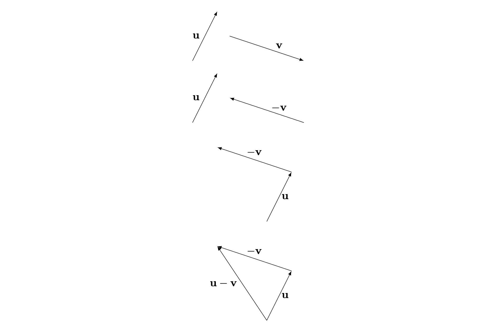

Addition and scalar multiplication
Before reading this guide, it is recommended that you read (Guide: Introduction to vectors).
What is vector addition and scalar multiplication?
Vectors have a magnitude and a direction and are represented in coordinate spaces by components. These components can be considered independent to each other. As a result, when you add two vectors together or multiply a vector by a scalar, you have to consider each component of the vector individually. Vector addition is important as it forms the basis of linear mathematics, which is widely used in many different areas of physics and maths.
This guide will focus on introducing addition and scalar multiplication, for vectors in both \(\mathbf{i}\),\(\mathbf{j}\),\(\mathbf{k}\) and column notation, and explaining the role of addition and scalar multiplication in solving simple equations using vectors.
The geometric interpretation of vector addition
You can interpret vector addition geometrically, where the addition of vectors is the joining of one head of the vector to the tail of another.

In the above diagram, the two vectors \(\mathbf{u}\) and \(\mathbf{v}\) are shown. The addition of the two vectors is the process of joining the head of one of the vectors to the tail of another. Then completing the triangle to form the new vector.
For subtraction of vectors, inverse the direction of the vector first before joining them. This is because flipping the direction implies changing the vector from \(\mathbf{v}\) to \(-\mathbf{v}\).

Let \(\mathbf{a} = \begin{pmatrix}a_1\\a_2\\a_3\end{pmatrix}\) and \(\mathbf{b} = \begin{pmatrix}b_1\\b_2\\b_3\end{pmatrix}\), the addition of the two vectors, denoted \(\mathbf{a} + \mathbf{b}\), is defined as follows: \(\mathbf{a} + \mathbf{b} = \begin{pmatrix}a_1 + b_1\\a_2 + b_2\\a_3 + b_3\end{pmatrix}\).
In \(\mathbf{i}\),\(\mathbf{j}\),\(\mathbf{k}\) notation, where \(\mathbf{a} = a_1 \mathbf{i} + a_2 \mathbf{j} + a_3 \mathbf{k}\) and \(\mathbf{b} = b_1 \mathbf{i} + b_2 \mathbf{j} + b_h3 \mathbf{k}\), the addition of the two vectors is defined as: \(\mathbf{a} + \mathbf{b} = (a_1+b_1) \mathbf{i} + (a_2 + b_2) \mathbf{j} + (a_3 + b_3)\mathbf{k}\).
For a finite number of dimensions n:
Let \(\mathbf{a} = \Sigma_{i=1}^n a_i \mathbf{v}_i\) and \(\mathbf{b} = \Sigma_{i=1}^n b_i \mathbf{v}_i\), the addition of the two vectors is defined as: \(\mathbf{a} + \mathbf{b} = \Sigma_{i-1}^n (a_i + b_i)\mathbf{v}_i\).
You may realize that vector addition is scalar addition done in a component manner, that is you sum of the magnitude of the \(\textbf{i}\)th component, the \(\textbf{j}\)th component and the \(\textbf{k}\)th component independently. Thus vector addition inherits properties from scalar addition as well.
Properties of vector addition
\(\mathbf{u} + \mathbf{v} = \mathbf{v} + \mathbf{u}\)
\((\mathbf{u} + \mathbf{v}) + \mathbf{w} = \mathbf{u} + (\mathbf{v} + \mathbf{w})\)
As vector addition is similar to scalar addition, then the rules for expanding brackets follow.
\(\mathbf{u} - \mathbf{v} + \mathbf{w} \neq\mathbf{u} - (\mathbf{v} + \mathbf{w})\)
The Zero vector
The zero vector \(\mathbf(0)\) is defined as a vector with zero length. This is different from the 0 scalar. You can learn more about the zero vector in Guide: Introduction to Vectors
The zero vector has the following properties:
\(\mathbf{0} + \mathbf{u} = \mathbf{u}\)
\(\mathbf{u} + (-\mathbf{u}) = \mathbf{0}\)
You are given \(\mathbf{a} = \begin{pmatrix}3\\4\end{pmatrix}\) and \(\mathbf{b} = \begin{pmatrix}5\\6\end{pmatrix}\). Then \(\mathbf{a} + \mathbf{b} = \begin{pmatrix}3+5\\4+6\end{pmatrix} = \begin{pmatrix}8\\10\end{pmatrix}\)
You are given \(\mathbf{a} = 3\mathbf{i} + 4\mathbf{j}\) and \(\mathbf{b} = 5\mathbf{i} - 6\mathbf{j}\). Then \(\mathbf{a} - \mathbf{b} =(3-5)\mathbf{i} + (4+6)\mathbf{j} = -2\mathbf{i} + 10\mathbf{j}\)
You are given \(\mathbf{a} = 3\mathbf{i} + 4\mathbf{j}\) and \(\mathbf{b} = 2\mathbf{i} +8\mathbf{j} + 12\mathbf{k}\). Then \(\mathbf{a} + \mathbf{b} =(3+2)\mathbf{i} + (4+8)\mathbf{j} + (0 + 12)\mathbf{k} = 5\mathbf{i} + 12\mathbf{j} + 12\mathbf{k}\)
You are given \(\mathbf{a} = \begin{pmatrix}2\\1\\0\end{pmatrix}\), \(\mathbf{b} = \begin{pmatrix}7\\2\\1\end{pmatrix}\) and \(\mathbf{c} = \begin{pmatrix}-3\\-2\\5\end{pmatrix}.\) Then \(\mathbf{a} + \mathbf{b} - \mathbf{c} = \begin{pmatrix}2+7 - (-3)\\1+2-(-2)\\0 + 1 - 5\end{pmatrix} = \begin{pmatrix}12\\5\\-4\end{pmatrix}\)
You are given \(\mathbf{a}= \begin{pmatrix} 2\\\lambda\end{pmatrix}\). Then \(\mathbf{a} + \mathbf{0} = \begin{pmatrix} 2+0\\\lambda+0\end{pmatrix} = \begin{pmatrix} 2\\\lambda\end{pmatrix}\).
Scalar multiplication
Another thing that you can do with vectors is to multiply it with a real scalar. In that case, the magnitude of the vector is multiplied with the scalar, giving it a new length but leaving the direction unchanged.
The geometric interpretation of scalar multiplication
You can represent scalar multiplication graphically. For different real scalars, the magnitude is multiplied by that amount. Note that if the scalar is negative, the direction of the vector is flipped.
![There are five vectors side by side. The first shows the general vector u. The second shows the vector lambda u,where lambda is larger than one. The vector is lambda times longer than the vector u, pointing in the same direction. The third vector shows the vector lambda u, where lambda is between one and zero. The magnitude of the vector is shorter than the original vector u by a factor of lambda. The forth vector shows lambda u, where lambda is between negative one and zero. The magnitude of the vector is shorter than the original vector u by a factor of lambda, as such the direction of the vector is reversed. The fifth vector shows the vector lambda u, where lambda is smaller than negative one. The magnitude of the vector is longer than the original vector u, and direction of the vector is inverted.](./FiguresPNG/vectoradditionandscalarmultiplication-fig3.png)
Given a vector \(\mathbf{a}\) and a real number scalar \(\lambda\), then \(\lambda \mathbf{a}\) is a vector that has the same direction as \(\mathbf{a}\) but with its length multiplied by \(\lambda\). If \(\lambda < 0\), then the direction of \(\mathbf{a}\) is reversed.
In column notation, if \(\mathbf{a} = \begin{pmatrix}a_1\\a_2\\a_3\end{pmatrix}\), then \(\lambda \mathbf{a} = \begin{pmatrix}\lambda a_1\\ \lambda a_2\\ \lambda a_3 \end{pmatrix}\)
In \(\mathbf{i}\),\(\mathbf{j}\),\(\mathbf{k}\) notation, if \(\mathbf{a} = a_1\mathbf{i} + a_2\mathbf{j} + a_3\mathbf{k}\), then \(\lambda \mathbf{a} = \lambda a_1\mathbf{i} + \lambda a_2\mathbf{j} + \lambda a_3\mathbf{k}\)
Properties of scalar multiplication
Since vector addition is similar to component-wise multiplication, then it has the following properties for scalars \(\lambda\) and \(\mu\):
\(\lambda \mu \mathbf{a} = \lambda (\mu \mathbf{a})\)
\(( \lambda + \mu ) \mathbf{a} = \lambda \mathbf{a} + \mu \mathbf{a}\)
\(\lambda (\mathbf{a} + \mathbf{b}) = \lambda\mathbf{a} + \lambda\mathbf{b}\)
You are given \(\mathbf{a} = \begin{pmatrix}3\\5\\6\end{pmatrix}\). Then \(5\mathbf{a} = \begin{pmatrix}(5)(3)\\(5)(5)\\(5) (6)\end{pmatrix} = \begin{pmatrix}15\\25\\30\end{pmatrix}\)
You are given \(\mathbf{b} = -2\mathbf{i} + 6\mathbf{j} - 7\mathbf{k}\). Then \(-3\mathbf{b} = (-3)(-2)\mathbf{i} + (-3)6\mathbf{j} - (-3)7\mathbf{k} = 6\mathbf{i} -18\mathbf{j} + 21\mathbf{k}\)
Solving vector equations
By combining addition and scalar multiplication, you can form vector equations. A property of vectors is that they are only equal if and only if their components are individually equal. You can use this to solve vector equations.
It is important to solve vector equations. It has many applications like in mechanics problems, solving simultaneous equations and is fundemental to linear mathematics.
If \(\lambda \mathbf{a} + \mu \mathbf{b} = \mathbf{c}\)
Then in \(\textbf{i}\),\(\textbf{j}\),\(\textbf{k}\) notation,
let \(\mathbf{a} = a_1\mathbf{i} + a_2\mathbf{j}\),\(\mathbf{b} = b_1\mathbf{i} + b_2\mathbf{j}\) and \(\mathbf{c} = c_1\mathbf{i} + c_2\mathbf{j}\).
The equation gives
\(\lambda(a_1\mathbf{i} + a_2\mathbf{j} )+ \mu(b_1\mathbf{i} + b_2\mathbf{j}) = c_1\mathbf{i} + c_2\mathbf{j}\)
In column notation,
\(\mathbf{a} = \begin{pmatrix}a_1\\a_2\end{pmatrix}\), \(\mathbf{b} = \begin{pmatrix}b_1\\b_2\end{pmatrix}\) and \(\mathbf{c} = \begin{pmatrix}c_1\\c_2\end{pmatrix}\).
The equation gives \(\begin{pmatrix}\lambda a_1 + \mu b_1\\ \lambda a_2 + \mu b_2\end{pmatrix} = \begin{pmatrix}c_1\\c_2\end{pmatrix}\)
Both notations give the same simultaneous equations:
\(\begin{cases}\lambda a_1 + \mu b_1 = c_1\\\lambda a_2 + \mu b_2 = c_2\end{cases}\)
If you have some general vectors \(\mathbf{u}\) and \(\mathbf{v}\),then if \(\mathbf{u} = \lambda \mathbf{v}\), the two vectors must be parallel to each other. If the vectors are parallel to each other, but they point in opposite directions, they are anti-parallel to each other.
If the coordinates of B are \(\begin{pmatrix}-5,-2,-4\end{pmatrix}\) and \(\overrightarrow{AB} = \mathbf{i} + \mathbf{j} - 6\mathbf{k}\), then you can find the coordinates of A by solving the equation
\(\overrightarrow{AB} = \overrightarrow{OB} - \overrightarrow{OA}\).
Let \(A = \begin{pmatrix}a_1\\a_2\\a_3\end{pmatrix}\)
\(\begin{pmatrix}1\\1\\-6\end{pmatrix} = \begin{pmatrix}-5\\-2\\-4\end{pmatrix} - \begin{pmatrix}a_1\\a_2\\a_3\end{pmatrix}\), which gives the simultaneous equations
\(\begin{cases}1 = -5 - a_1 \\1 = -2-a_2 \\ -6 = -4 - a_3\end{cases}\)
Solving the equation gives \(a_1 = -6\), \(a_2 = -3\) and \(a_3 = 2\). So \(A = \begin{pmatrix}-6\\-3\\2\end{pmatrix}\)
If \(\mathbf{u} = 4\mathbf{i} + 3\mathbf{j}\) and \(\mathbf{v} = -\mathbf{i} + 2\mathbf{j}\), you can express \(7\mathbf{i} + 19\mathbf{j}\) in terms of \(\mathbf{u}\) and \(\mathbf{v}\) by solving \(7\mathbf{i} + 19 \mathbf{j} = \lambda \mathbf{u} + \mu \mathbf{v} = (4\lambda \mathbf{i} + 3\lambda\mathbf{j}) + (-\mu\mathbf{i} + 2\mu\mathbf{j})\)
\(7\mathbf{i} + 19 \mathbf{j} = (4\lambda - \mu)\mathbf{i} + (3\lambda + 2\mu) \mathbf{j}\), which gives the simultaneous equations
\(\begin{cases} 7 = 4\lambda - \mu \dots(1) \\ 19 = 3\lambda + 2\mu\dots(2)\end{cases}\) Solving the equation gives \(\lambda = 3\) , \(\mu = 5\)
\(8\mathbf{i} + 9\mathbf{j} = 3\mathbf{u} + 5\mathbf{v}\)
Quick check problems
- If \(\mathbf{a} = \begin{pmatrix}0\\-6\\2\end{pmatrix}\), then what is \(7\mathbf{a}\)?
Answer: \(7\mathbf{a}\) is equal to \(\mathbf{i}\) + \(\mathbf{j}\) + \(\mathbf{k}\).
- If \(\mathbf{b} = 2\mathbf{i} + 6\mathbf{k}\) and \(\mathbf{c} = -5\mathbf{i} + 3\mathbf{j} + 2\mathbf{k}\), then what is \(\mathbf{c} + 2\mathbf{b}\)?
Answer: \(\mathbf{c} + 2\mathbf{b}\) = \(\mathbf{i}\) + \(\mathbf{j}\) + \(\mathbf{k}\).
- Given that the coordinates \(A = \begin{pmatrix}2\\-1\\4\end{pmatrix}\) and \(B = \begin{pmatrix}3\\-3\\-6\end{pmatrix}\), what is the vector\(\overrightarrow{AB}\)?
Answer: \(\mathbf{i}\) + \(\mathbf{j}\) + \(\mathbf{k}\).
- You are given two statements below. Decide whether they are true or false.
If \(\lambda \mathbf{a} + \lambda \mathbf{b} = \mathbf(0)\) and \(\mathbf{a}\) and \(\mathbf{b}\) are non-zero vectors and not parallel to each other, then \(\lambda = \mu = 0\). Answer: .
If \(\overrightarrow{AB} = 2\mathbf{BC}\), the two vectors are perpendicular. Answer: .
For more questions on the subject, please go to Questions: Addition and scalar multiplication.